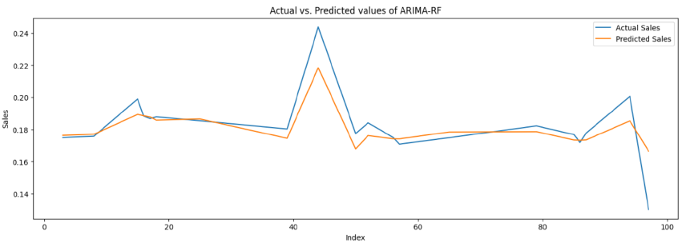

Sales Forecasting of Walmart Data using Hybrid Machine Learning Models
Python | Machine Learning

Built a hybrid ARIMA-Random Forest model on Walmart’s sales data to forecast weekly sales. Achieved high accuracy (MSE: 0.0179) and identified key patterns across stores and departments to support inventory and planning decisions.
Here are the questions I was interested in answering:
1) What was the business objective of your project?
2) How does removing outliers affect model performance?
3) How do different machine learning models perform in forecasting retail sales?
4) What is the most suitable forecasting model for a large retail dataset with mixed trends and noise?
5) How did you decide on the hybrid ARIMA-RF model?
6) How does Random Forest complement ARIMA in your hybrid model?
7) What features did you engineer from the date field?
8) Why is forecasting important for retail businesses like Walmart?
What was the business objective of your project?
The goal was to forecast weekly sales for Walmart stores by identifying trends, seasonality, and irregular sales patterns to improve demand planning, inventory management, and revenue forecasting.
I took the following steps to create my analysis:
- Collected data from the Walmart Sales Forecasting dataset on Kaggle (sales, features, and store information).
- Merged datasets using Store and Date as keys.
- Handled missing values: filled CPI and Unemployment with median; MarkDowns with 0 for missing/negative values.
Feature Engineering
- Extracted year, month, and week from the Date field.
- Calculated total markdown by summing MarkDown1–5 and dropped individual columns.
- Applied one-hot encoding to Store, Dept, and Type using
pd.get_dummies(). - Removed outliers using z-score normalization and filtered out records with negative weekly sales for cleaner model input.
- Applied Recursive Feature Elimination (RFE) to select top contributing features.
How does removing outliers affect model performance?
Removing outliers reduced variance in model predictions, prevented skewing of model weights, and improved accuracy, especially for models sensitive to large deviations like ARIMA and ANN.
How do different machine learning models perform in forecasting retail sales?
- ARIMA: Good at modeling linear trends and seasonality but struggled with noise.
- Holt-Winters: Simple seasonal model but less accurate than ensemble methods.
- Prophet: Useful for daily/weekly seasonality, easy to tune.
- ANN: Performed decently but required more tuning and data normalization.
- Random Forest: Captured non-linear patterns and interactions well.
What is the most suitable forecasting model for a large retail dataset with mixed trends and noise?
A hybrid ARIMA-Random Forest model performed best by combining ARIMA's strength in trend/seasonality with Random Forest’s power to capture residual, non-linear behavior.
How did you decide on the hybrid ARIMA-RF model?
After analyzing ARIMA residuals and noticing patterns that ARIMA failed to capture, I trained a Random Forest on those residuals, significantly improving the overall forecast accuracy.
How does Random Forest complement ARIMA in your hybrid model?
ARIMA handled the linear and seasonal components, while Random Forest modeled the residuals, capturing non-linearities and store-specific behaviors that ARIMA missed.
Architecture of the Hybrid Model
Why is forecasting important for retail businesses like Walmart?
Accurate forecasts help Walmart optimize inventory, reduce stockouts and overstocks, plan promotions effectively, and align staffing and logistics with expected demand.
Here are my key takeaways:
- The hybrid ARIMA-RF model achieved the lowest MSE (0.0179), offering the most accurate forecasts.
- Data cleaning, especially handling missing values and outliers, is crucial for model stability.
- Economic indicators like CPI and Unemployment are strong predictors of retail sales trends.
- ARIMA alone is not sufficient for complex retail data due to its inability to handle non-seasonal and nonlinear patterns effectively.
- Ensemble models like Random Forest improve performance by reducing overfitting and capturing variable importance.
- Forecasting enables better resource allocation, financial planning, and operational efficiency in retail.